공화당
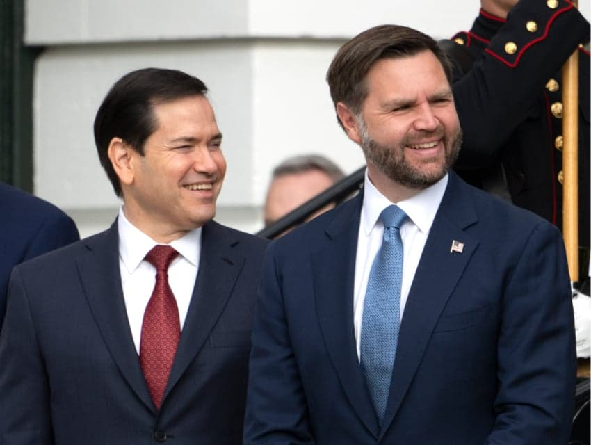
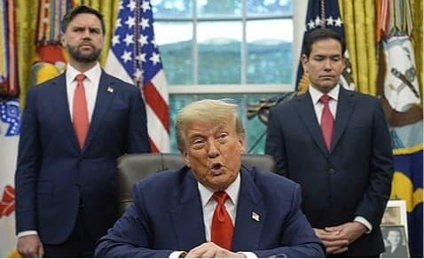
공화당의 대선후보는 사실상 2명으로 확정되었다.
대선이 2년이나 남았지만 아마 이변은 없을 것.
무조건 이 2명중에 한명으로 결정 될것이다.
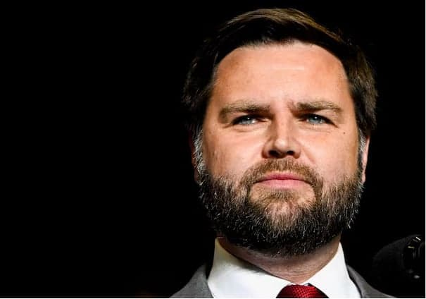
우선 현직 부통령인 JD 밴스
부통령, 그 자체만으로 트럼프의 후계자 포지션
노동자 러스트벨트를 아우를수 있는 오하이오출신
뛰어난 말빨, 사회문화적으로 굉장히 보수적
25년 후반까지는 MAGA에서 압도적인 지지율을 받았으나
문제는 트럼프랑 같은 배를 탔다는점이다.
트럼프가 지지율 떨굴때마다 밴스는 욕받이를 해야하고
트럼프랑 차별점을 두려고하면 MAGA한테 쌍욕먹는다
처음엔 매리트였던 부통령이라는 직책이
어느새 독배로 변한, 그야말로 진퇴양난의 상황이다
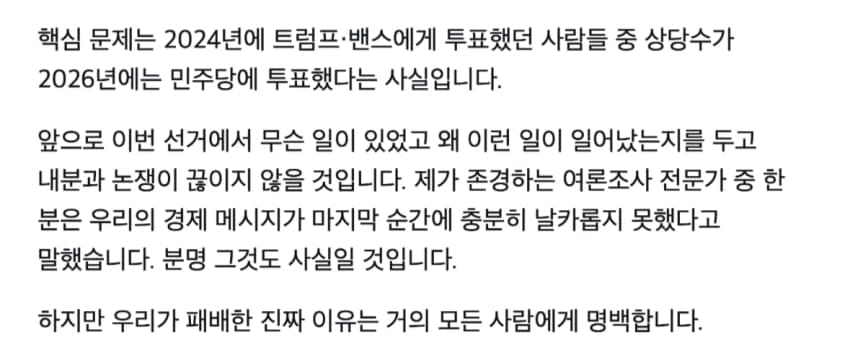
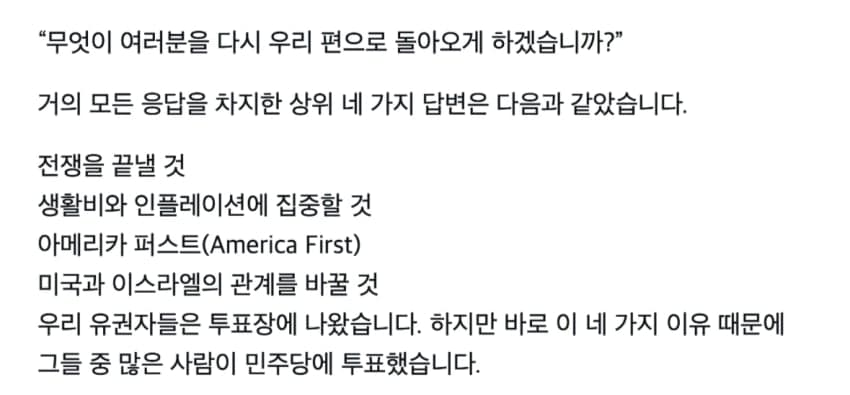
실제로 밴스는 이번 중간선거 끝나자마자 반성문을 썼는데
이 반성문 한번 썼다고 보수논객들에게 온갖 쌍욕을 먹었다
아마 28년까지 꾸준히 우하향하지 않을까..?
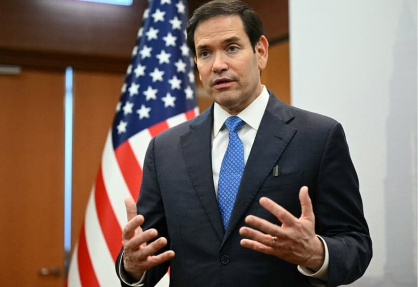
두번째는 국무장관인 마르코 루비오
주의회, 연방 상원, 국무장관까지 거친 풍부한 경력
이민자 가정 출신이라 히스패닉에게도 어필가능
전통적인 공화당정치인
우선 밴스와 다르게 정해진 계파가 없다는것이
굉장히 큰 매리트다.
게다가 과거 트럼프랑 경쟁한적도 있지만
현재는 꽤나 완만한 관계인만큼 정치 관계도 좋은편
달리 말하면 이것은
언제나 '자기정치'를 할 수 있다는 것
= 원하면 언제든지 트럼프를 손절할수도 있다는 것이다
거기다가 최근 미국의 이란침공 사태를 겪으면서
국무장관이라는 루비오의 위치가 떡상,
공화당원과 중도층에게 좋은 인상을 보이며
지지율이 폭풍상승하였다
사실상 공화당원이 좋아할수밖에 없는 정치인
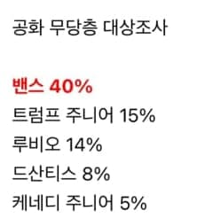
25년 초중반 여론조사다.
밴스가 압도적인것을 볼수 있다.
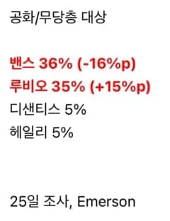
이란침공 이후로 밴스의 루비오의 지지율이
점점 비등비등 해지기 시작했다
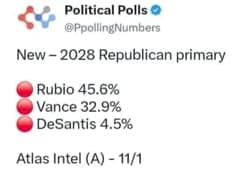
올해 11월 여론조사다.
루비오가 어느새 1위를 찍은 상황이다.
——————
민주당
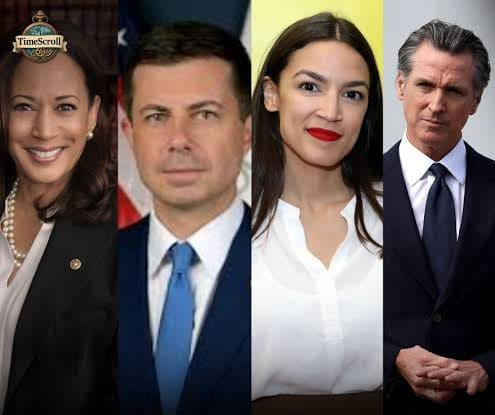
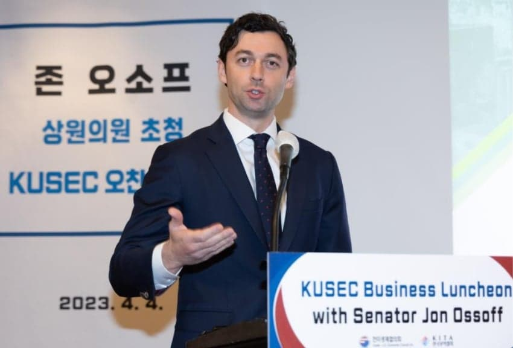
사실상 BIG2가 주도하는 공화당과 달리
민주당은 후보군이 난립하고 있는 상황이다.
그래도 꼽아보자면 위의 4명과 함께
이번 중간선거에서 당선된 존 오소프 까지.
총 5명정도로 추릴 수 있을것이다.
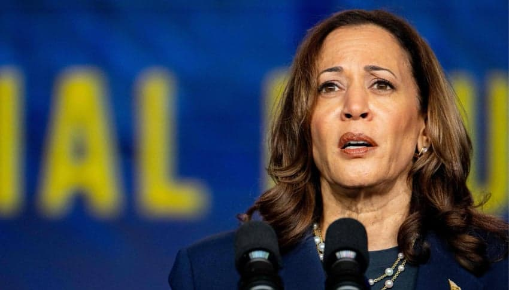
첫 번째. 전 부통령 카멀라 해리스.
ㅅㅂ이년 또나와? 싶겠지만 인지도빨은 무시못한다.
행정부 경험 + 대선주자로서의 인지도
그리고 여성+흑인이라는 X룡인 보정까지
너 때문에 나라 이꼴됐다,
정치 그만큼 했으면 좀 빠져라 등등..
민주당원에게도 온갖 쌍욕을 먹고있지만
여전히 흑인과 히스패닉 지지도는 굉장한편.
다만 2년이라는 기간동안 이미지 반등을 성공하고
대선까지 직행할수 있을지는 의문
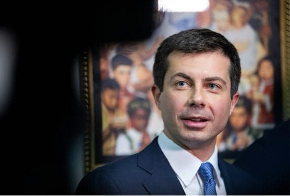
두 번째는 전 교통부장관 피트 부티지지
중도적임
젊음
민주당에선 토론실력 수준급
아프간 참전용사라 공화당원들도 엄청 나쁘게 보진않는다
다만 '민주당 출신'인거 말고
극좌 지지층에겐 매리트가 별로 없다는게 현실
특히 흑인 지지율은 매우 처참한수준
대도시 행정경형도 없고,
아직은 미숙한 정치인이라 볼 수 있겠다
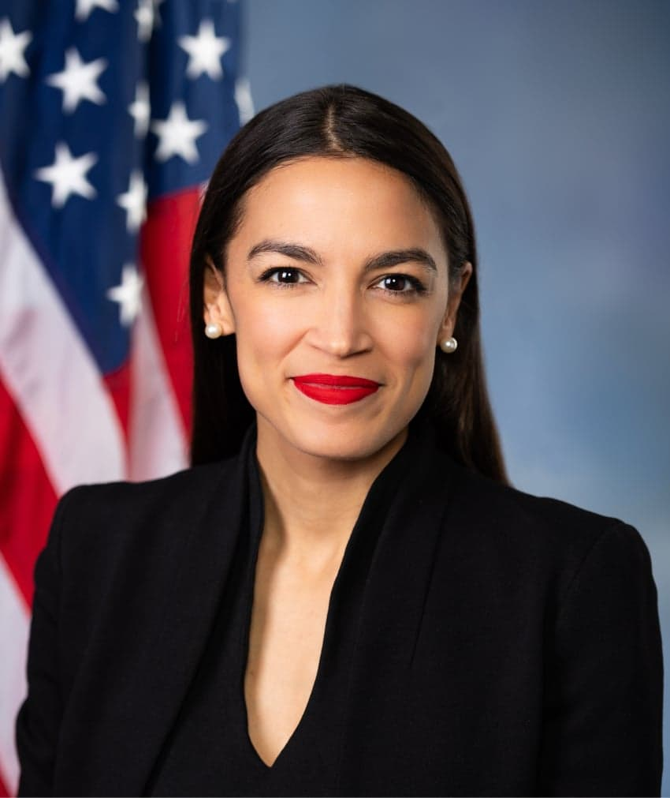
세번째는 알렉산드리아 오카시오코르테스, 줄여서 AOC
젊음
SNS 활용도 높음, 높은 젊은층 지지율
명백한 극좌라 민주당원들에게 엄청난 존재감
스스로를 사회주의자라 자부하는 미친련이다.
그만큼 민주당 내에서도 지지층도 많은데 비토층도 많다
중도층과 공화당원들에겐 악마년이나 다름없는 인물,
= 대선 경쟁률은 박살나 있는 상태
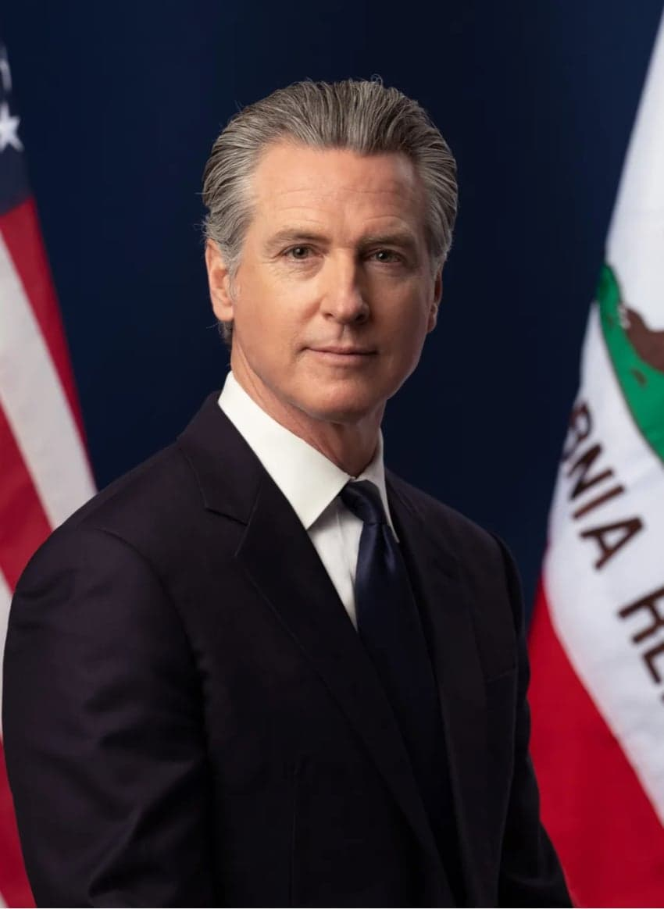
네번째는 캘리포니아 주지사 개빈 뉴섬
미국 최대인구주를 통치하고있는 정치경험
반트럼프의 선봉장
사회문화적으로도 굉장히 진보적
우리나라로 따지면 경기도지사?
근데 캘리포니아가 진보의 상징성이 있다보니
경기지사+호남지사 섞어놓은거라 보면된다
대중인지도도 엄청 높은편
다만 토론은 존나못하는데 미국인들도 대강 알고있다
현재 대선 올라올 경우 확실하게 승리할것으로 예상된다
단 해리스랑 뽕알친구라
해리스가 28년에 출마하면
본인은 대선출마 안한다고 못박은 상태.
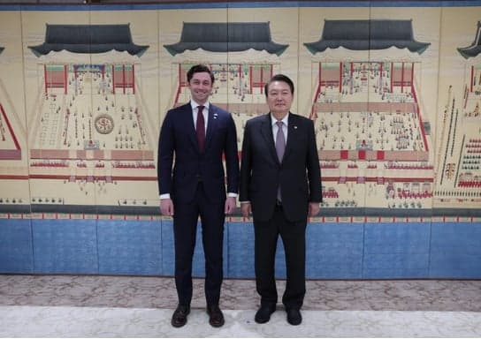
마지막은 존 오소프 상원의원
경합주에서 공화당 상대로 2연승
굉장히 젊고 중도적, 비슷한 부티지지보다 5살 젊음
이번 중간선거 계기로 인지도 팍 키운상태
사실상 백지같은 정치인이라
본인이 이제 어떻게 행동하냐에 따라 달린것같다
별개로 공화/민주당 핵심정치인중 가장 친한파인편
한번은 오소츠 이재명 만난적이 있었는데
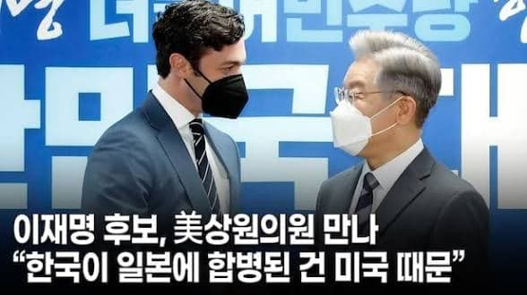
만나자마자 면전에서 이렇게 쌍욕 먹은적도있다.
그럼에도 어쨌든 계속 친한파 하고있는중
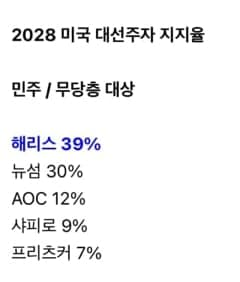
25년도에는 뉴섬 해리스 양강 체제였으나
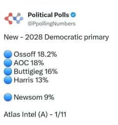
최근에는 다같이 10%대로 난립중인상태,
과언 누가 대선까지 직행하게될지??
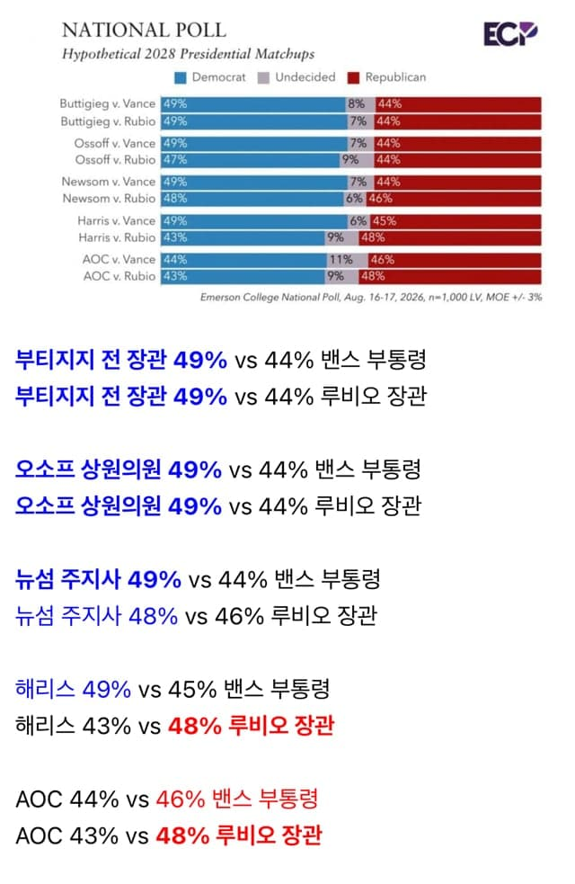
그리고 최근 대선 양자대결 여론조사다.
트럼프 심판론이 불고있는 가운데
지지율 반등이 없으면
공화당 후보군은 꽤나 힘들것으로 예상
(근데도 AOC 올라오면 공화당이 이김)
댓글
수집 당시 댓글 173개
· ㅇㅇ · 11.16 22:50:43
· ㅇㅇ · 11.16 23:15:58
· ㅇㅇ · 11.17 00:31:26
· ㅇㅇ · 11.17 00:31:53
192.168.* · 11.16 22:03:04
ㅇㅇ · 11.16 22:03:55
ㅇㅇ · 11.16 22:04:34
ㅇㅇ · 11.16 22:04:36
· ㅇㅇ · 11.16 22:09:12
ㅇㅇ · 11.16 22:04:46
ㅇㅇ · 11.16 22:05:03
ㅇㅇ · 11.16 22:05:13
ㅇㅇ · 11.16 22:05:31
ㅇㅇ · 11.16 22:05:42
· ㅇㅇ · 11.17 00:32:56
andrey_santos · 11.16 22:06:29
ㅇㅇ · 11.16 22:08:35
ㅇㅇ · 11.16 22:09:35
ㅇㅇ · 11.16 22:11:07
· ㅇㅇ · 11.17 08:54:39
· ㅇㅇ · 11.17 10:03:00
ㅇㅇ · 11.16 22:11:43
· ㅇㅇ · 11.16 22:18:41
하체비만 미인이잖아 한잔해
· ㅇㅇ · 11.16 22:23:44
절름발이펭귄 · 11.16 22:15:49
ㅇㅇ · 11.16 22:16:22
ㅇㅇ · 11.16 22:16:55
· ㅇㅇ · 11.16 22:17:28
· ㅇㅇ · 11.16 22:18:02
· ㅇㅇ · 11.16 22:39:33
1111 · 11.16 22:17:40
· ㅇㅇ · 11.16 22:18:54
· ㅇㅇ · 11.17 10:35:45
ㅇㅇ · 11.16 22:17:58
· ㅇㅇ · 11.16 22:19:47
· ㅇㅇ · 11.16 22:23:06
ㅇㅇ · 11.16 22:19:21
ㅇㅇ · 11.16 22:20:13
· ㅇㅇ · 11.16 22:24:13
ㅇㅇ · 11.16 22:21:46
· ㅇㅇ · 11.16 22:31:39
· 판갤러 · 11.16 22:35:21
친중정권이니 좋은거아님?
· ㅇㅇ · 11.16 22:50:06
나 134.82인데 미정갤러다
· ㅇㅇ · 11.16 23:31:08
· ㅇㅇ · 11.17 00:33:47
ㅇㅇ · 11.16 22:24:17
카말라
Again!
ㅇㅇ · 11.16 22:26:41
· ㅇㅇ · 11.16 22:33:14
· ㅇㅇ · 11.17 00:16:54
ㅇㅇ · 11.16 22:28:03
ㅇㅇ · 11.16 22:31:00
ㅇㅇ · 11.16 22:32:22
ㅇㅇ · 11.16 22:32:47
ㅇㅇ · 11.16 22:35:36
ㅁㄴㅇㄹ · 11.16 22:37:13
· ㅇㅇ · 11.17 00:34:13
ㅇㅇ · 11.16 22:38:08
· ㅇㅇ · 11.16 22:38:33
· ㅇㅇ · 11.16 22:38:57
ㅇㅇ · 11.16 22:38:57
ㅇㅇ · 11.16 22:59:48
ㅇ · 11.16 23:13:16
ㅇㅇ · 11.16 23:14:03
계집은 필패
ㅇㅇ · 11.16 23:15:50
ㅇㅇ · 11.16 23:18:33
ㅇㅇ · 11.16 23:19:17
ㅇㅇ · 11.16 23:19:57
해방의전사 · 11.16 23:25:58
· ㅇㅇ · 11.16 23:40:27
· 해방의전사 · 11.16 23:44:23
· ㅇㅇ · 11.17 10:38:29
· 해방의전사 · 11.17 13:53:22
· ㅇㅇ · 11.17 13:57:54
sadas · 11.16 23:39:02
ㅇㅇ · 11.16 23:56:21
ㅇㅇ · 11.17 00:02:18
gggg · 11.17 00:04:36
· gggg · 11.17 00:05:48
ㅇㅇ · 11.17 00:25:34
환란 전 교회 휴거 · 11.17 00:31:23
ㅇㅇ · 11.17 00:43:45
피아견 · 11.17 00:46:20
주소킹 · 11.17 01:05:44
ㅇㅇ · 11.17 02:43:37
ㅇㅇ · 11.17 02:43:42
앙갤러 · 11.17 02:54:48
주소킹 · 11.17 03:51:15
ㄹㅇㅎ · 11.17 07:42:20
ㅇㅇ · 11.17 08:37:54
ㅇㅇ · 11.17 08:46:30
ㅇㅇ · 11.17 08:57:38
고약상자 · 11.17 09:11:44
고약상자 · 11.17 09:16:58
ㅇㅇ · 11.17 09:52:59
ㅇㅇ · 11.17 10:40:11
· ㅇㅇ · 11.17 18:26:03
· ㅇㅇ · 11.17 18:28:35
ㄴㅁㄴㅁ · 11.17 11:24:22
ㅇㅇ · 11.17 18:32:41
ㅇㅇ · 11.17 19:08:52
ㅇㅇ · 11.14 17:24:46
· ㅇㅇ · 11.14 21:26:15
ㅇㅇ · 11.14 17:27:58
· ㅇㅇ · 11.16 22:01:06
ㅇㅇ · 11.14 17:29:52
수류탄이야 · 11.14 17:33:29
ㅇㅇ · 11.14 17:34:03
ㅇㅇ · 11.14 17:51:39
· ㅇㅇ · 11.14 18:12:41
· ㅇㅇ · 11.14 19:02:55
· 조장군 · 11.14 19:32:59
· ㅇㅇ · 11.14 19:46:10
· ㅇㅇ · 11.16 22:03:04
ㅇㅇ · 11.14 18:02:40
디비자 · 11.14 18:23:49
· ㅇㅇ · 11.14 20:10:55
· 디비자 · 11.14 20:12:01
· 디비자 · 11.14 20:12:52
· ㅇㅇ · 11.15 05:03:00
ㅇㅇ · 11.14 18:24:30
종이 · 11.14 18:34:08
ㅇㅇ · 11.14 18:40:43
· 디오니소스 · 11.14 18:57:01
· ㅇㅇ · 11.14 18:58:13
· 부키랑랑 · 11.14 19:35:30
· ㅇㅇ · 11.14 21:04:20
ㅇㅇ · 11.14 19:01:36
ㅇㅇ · 11.14 19:04:46
· ㅇㅇ · 11.14 19:37:54
· ㅇㅇ · 11.14 20:21:10
· ㅇㅇ · 11.16 22:09:05
· ㅇㅇ · 11.17 00:35:11
ㅇㅇ · 11.14 19:08:11
ㅇㅇ · 11.14 19:32:13
기신고래(진) · 11.14 20:12:34
블랙토끼 · 11.14 20:17:43
ㅇㅇ · 11.14 20:46:55
· ㅇㅇ · 11.14 21:03:57
· ㅇㅇ · 11.16 23:15:40
· ㅇㅇ · 11.17 00:35:43
ㅇㅇ · 11.14 21:02:05
ㅇㅇ · 11.14 21:42:04
ㅇㅇ · 11.14 22:45:03
ㅇㅇ · 11.15 01:30:18
흔들리며피는꽃 · 11.15 12:09:25
봇치쟝 · 11.16 21:56:00
· ㅇㅇ · 11.16 23:16:28
· 봇치쟝 · 11.16 23:20:24
· ㅇㅇ · 11.16 23:21:10
· 봇치쟝 · 11.16 23:24:07
· ㅇㅇ · 11.16 23:25:38
· 봇치쟝 · 11.16 23:28:25
· ㅇㅇ · 11.16 23:29:11
· 봇치쟝 · 11.16 23:40:39
· ㅇㅇ · 11.16 23:43:57
· 봇치쟝 · 11.16 23:44:41
· ㅇㅇ · 11.16 23:45:11
· 봇치쟝 · 11.16 23:52:01
ㅇㅇ · 11.16 21:56:54
ㅇㅇ · 11.16 21:58:01
· ㅇㅇ · 11.16 22:28:13
ㅇㅇ · 11.16 21:59:04
오소프가 돼야 한다
· ㅇㅇ · 11.16 21:59:16
얼굴이
복지다
깔깔깔
다람디 · 11.16 21:59:11
ㅇㅇ · 11.16 21:59:47
· ㅇㅇ · 11.16 22:12:24
· ㅇㅇ · 11.16 23:17:09
ㅇㅇ · 11.16 22:00:30
· ㅇㅇ · 11.16 22:04:53
· ㅇㅇ · 11.16 22:07:08
· ㅇㅇ · 11.16 22:11:25
· ㅇㅇ · 11.16 22:20:33
· ㅇㅇ · 11.16 22:28:49